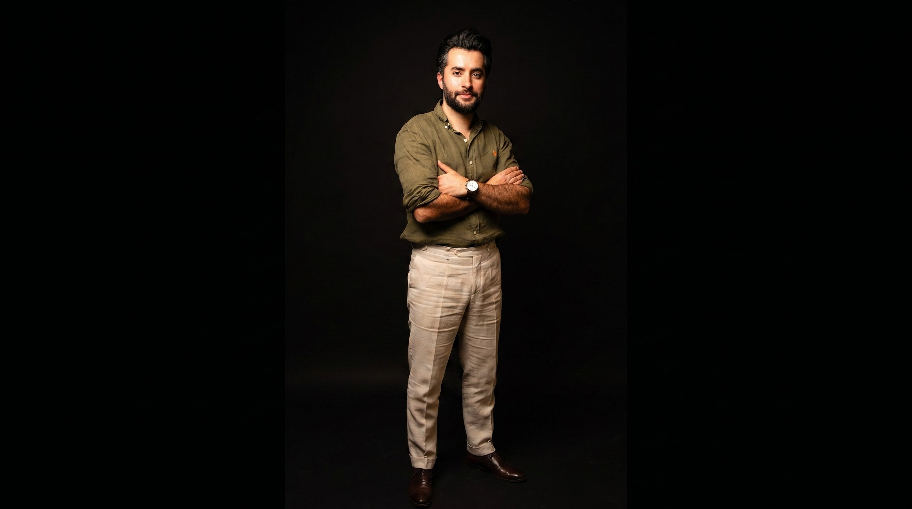
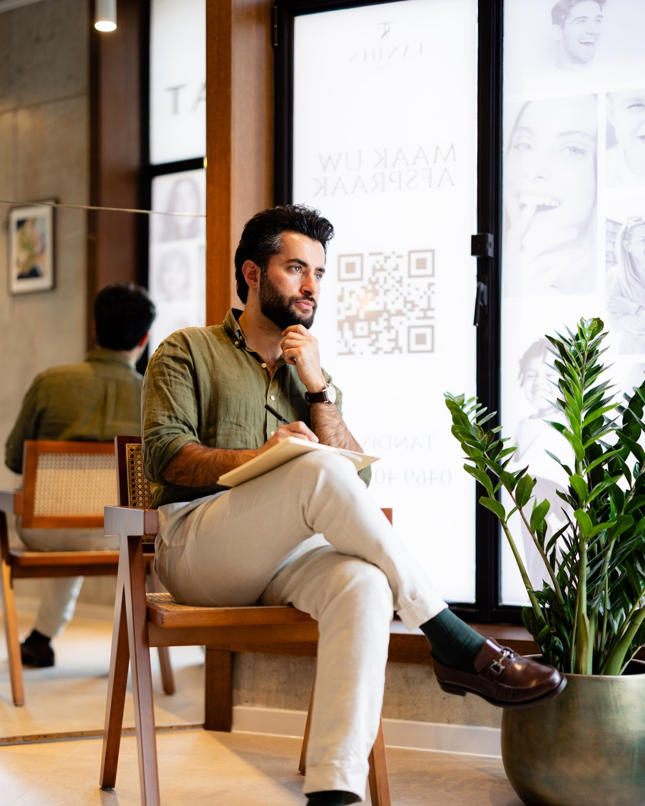

0
Smiles TransformedGlimlachen Getransformeerd
0
Years of ExperienceJaar Ervaring
0
Dedicated SpecialistsToegewijde Specialisten
0
Patient SatisfactionPatiënttevredenheid

At Ben's Orthodontie, we combine advanced digital technology with personalised care to create the confident smile you deserve. Every treatment is tailored, every result is lasting. Bij Ben's Orthodontie combineren we geavanceerde digitale technologie met persoonlijke zorg om de zelfverzekerde glimlach te creëren die u verdient. Elke behandeling is op maat, elk resultaat is blijvend.
From invisible aligners to precision braces, we offer a full spectrum of treatments designed to suit your lifestyle and orthodontic needs. Van onzichtbare aligners tot precisiebeugels, wij bieden een volledig scala aan behandelingen die passen bij uw levensstijl en orthodontische behoeften.
Transparent, removable aligners that straighten your teeth discreetly. Ideal for adults and teens seeking an invisible orthodontic solution.Transparante, verwijderbare aligners die uw tanden discreet recht zetten. Ideaal voor volwassenen en tieners die een onzichtbare oplossing zoeken.
Learn MoreMeer InfoProven metal and ceramic bracket systems for reliable correction of complex alignment issues. Modern designs ensure greater comfort than ever before.Bewezen metalen en keramische bracketsystemen voor betrouwbare correctie van complexe standafwijkingen. Moderne ontwerpen zorgen voor meer comfort dan ooit.
Learn MoreMeer InfoBrackets placed behind the teeth for completely hidden treatment. An excellent option for patients who need fixed appliances without visible hardware.Brackets aan de binnenkant van de tanden voor een volledig onzichtbare behandeling. Een uitstekende optie voor patiënten die vaste apparatuur willen zonder zichtbare brackets.
Learn MoreMeer InfoCustom-fitted retainers to preserve your orthodontic results for years to come. Both fixed and removable options are available to match your preference.Op maat gemaakte retainers om uw orthodontische resultaten jarenlang te behouden. Zowel vaste als verwijderbare opties zijn beschikbaar naar uw voorkeur.
Learn MoreMeer InfoState-of-the-art intraoral scanners replace traditional moulds with precise digital impressions, providing greater accuracy and a more comfortable experience.Geavanceerde intraorale scanners vervangen traditionele afdrukken door nauwkeurige digitale scans, met meer precisie en een comfortabelere ervaring.
Learn MoreMeer InfoIn-house 3D printing allows us to produce custom orthodontic appliances, models and retainers on-site — reducing wait times and improving treatment precision.Met onze eigen 3D-printer produceren wij op maat gemaakte orthodontische apparaten, modellen en retainers ter plaatse — kortere wachttijden en hogere behandelprecisie.
Learn MoreMeer Info
Founded by orthodontist Behnam Hesami, Ben's Orthodontie was built on a simple philosophy: every patient deserves treatment that is as individual as their smile. Our Antwerpen practice combines advanced digital workflows with a warm, welcoming environment where you feel heard and at ease from the first consultation onward. Opgericht door orthodontist Behnam Hesami, is Ben's Orthodontie gebouwd op een eenvoudige filosofie: elke patiënt verdient een behandeling die net zo uniek is als zijn of haar glimlach. Onze praktijk in Antwerpen combineert geavanceerde digitale workflows met een warme, gastvrije omgeving waar u zich gehoord en op uw gemak voelt vanaf het eerste consult.
Treatment grounded in clinical researchBehandeling gebaseerd op klinisch onderzoek
Streamlined scheduling & fewer visitsGestroomlijnde planning & minder bezoeken
Relaxed environment & gentle approachOntspannen omgeving & zachte aanpak
3D scanning, planning & printing3D-scanning, planning & printen

Our practice is equipped with the latest in digital orthodontic technology. From high-resolution 3D intraoral scanners that eliminate the need for traditional moulds, to in-house 3D printers that produce custom aligners and appliances — we leverage innovation at every stage of your treatment journey. Onze praktijk is uitgerust met de nieuwste digitale orthodontische technologie. Van hoge-resolutie 3D intraorale scanners die traditionele afdrukken overbodig maken, tot onze eigen 3D-printers die op maat gemaakte aligners en apparaten produceren — wij zetten innovatie in bij elke stap van uw behandeltraject.
Digital treatment planning allows us to simulate your results before treatment begins, so you can visualise your future smile with confidence. Digitale behandelplanning stelt ons in staat om uw resultaten te simuleren voordat de behandeling begint, zodat u uw toekomstige glimlach met vertrouwen kunt visualiseren.
Explore Our TechnologyOntdek Onze Technologie
Exploring the key differences between these popular orthodontic options to help you decide which suits your lifestyle best.Een verkenning van de belangrijkste verschillen tussen deze populaire orthodontische opties om u te helpen beslissen welke het beste bij uw levensstijl past.

Early assessment can identify potential issues before they become complex. Learn the ideal timing for your child's first orthodontic evaluation.Vroegtijdige beoordeling kan potentiële problemen identificeren voordat ze complex worden. Ontdek het ideale moment voor de eerste orthodontische evaluatie van uw kind.

Digital impressions have revolutionised how orthodontists plan and execute treatment. Discover the benefits of going fully digital.Digitale afdrukken hebben een revolutie teweeggebracht in hoe orthodontisten behandelingen plannen en uitvoeren. Ontdek de voordelen van volledig digitaal werken.

Schedule your consultation today and discover how our personalised orthodontic treatments can transform your smile. No referral needed — contact us directly. Plan vandaag nog uw consult en ontdek hoe onze gepersonaliseerde orthodontische behandelingen uw glimlach kunnen transformeren. Geen verwijzing nodig — neem rechtstreeks contact met ons op.